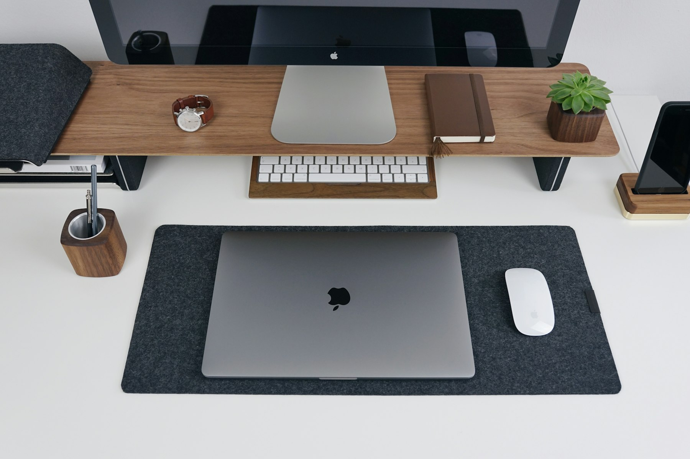
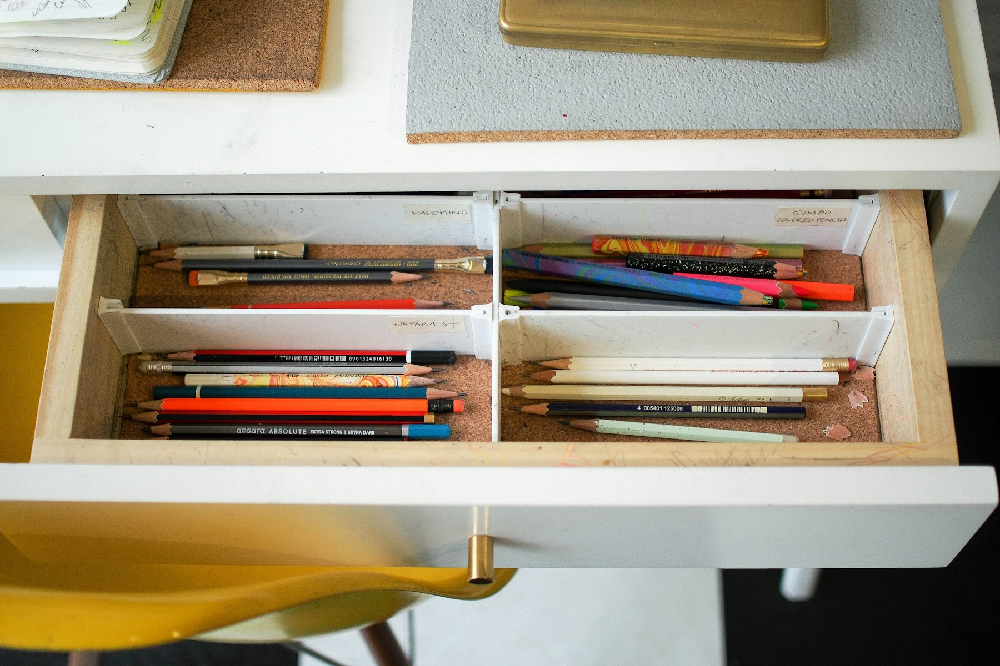
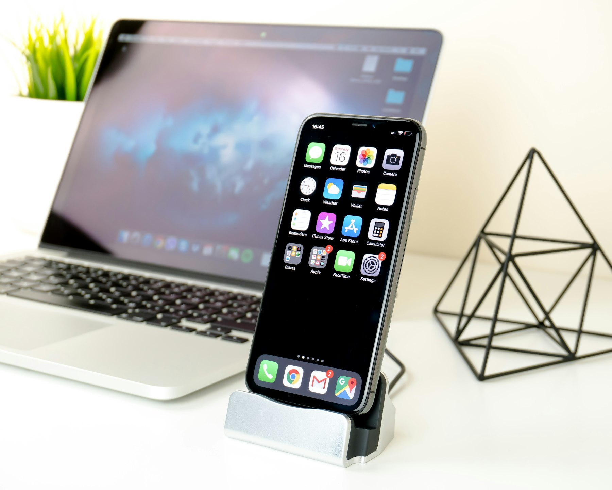
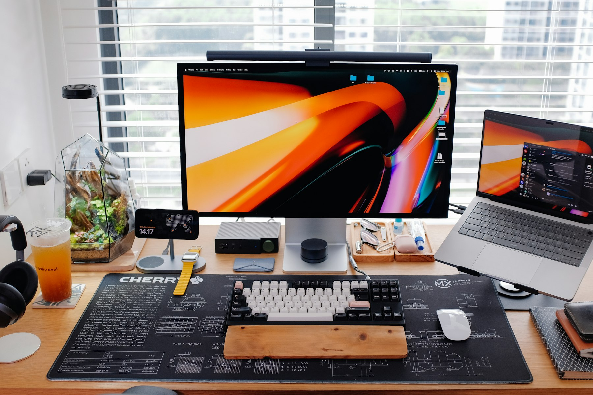

TL;DR
Creating the best desk setup under $200 is possible with careful planning. Focus on essential items like a budget-friendly desk, ergonomic chair, and accessories to enhance productivity.

Choosing the Right Desk
When looking for a desk under $200, consider size, shape, and functionality. Start by measuring your workspace to find a desk that fits comfortably. L-shaped desks are great for maximizing corner space, while standard rectangular desks offer versatility. Brands like IKEA and Sauder provide budget-friendly options. Look for desks made of solid wood or quality laminate to ensure durability and longevity. Check online stores for deals, and remember to include shipping costs in your budget. Make sure the desk has enough surface area for your computer, paperwork, and any other tools you use daily.
Selecting an Ergonomic Chair
An ergonomic chair plays a key role in your desk setup. Under $200, options from brands like Hon or AmazonBasics can offer comfort and support. Look for chairs that feature adjustable height and lumbar support. Test out the chair if possible; your thighs should be parallel to the floor and your feet flat. A cushioned seat with breathable fabric can also enhance comfort for long hours of sitting. Don’t forget to check the weight capacity and warranty offered. Investing in a good chair will improve your posture and overall work efficiency.

Essential Desk Accessories
To enhance your workspace, consider essential accessories that keep you organized. Items such as pen holders, document trays, and cable management solutions are affordable and useful. Invest in a good-quality mouse pad and keyboard wrist rest for better ergonomics. A desk lamp can improve lighting without straining your eyes during long work sessions. Consider small plants to enhance the atmosphere and reduce stress. You can often find these accessories in sets, making it easier to stay within budget while maximizing functionality.

Tech Additions Within Budget
Adding tech gadgets can elevate your desk setup. Consider options like a portable laptop stand or a quality webcam for video calls. Brands like Anker and Logitech have several affordable products. Bluetooth speakers or headphones can enhance your audio experience, whether for music or conference calls. A multi-port USB hub is another useful addition, especially if you have multiple devices. Research user reviews to ensure the tech gadgets deliver good value and functionality without breaking your budget.

Maximizing Your Workspace
Once you have your desk and accessories, the final step is to organize your workspace efficiently. Keep frequently used items within arm's reach to minimize distractions. Arrange your monitor at eye level to promote healthy posture. Use vertical space with shelves for books or decor, making your desk less cluttered. Cable management solutions can keep cords organized and prevent tangling. Finally, personalize your setup with inspiring artwork or photos. A well-organized and aesthetically pleasing workspace can significantly improve your productivity and mood.
FAQ
Can I really set up a desk for under $200?
Yes, many budget-friendly options exist. Prioritize essentials like a desk and chair.
What features should I look for in an ergonomic chair?
Look for adjustable height, lumbar support, and comfortable materials.
What accessories are absolutely necessary?
A good mouse pad, cable management tools, and a desk lamp are essential.
Are there affordable tech gadgets worth buying?
Yes, portable stands, USB hubs, and budget speakers improve functionality.
How can I personalize my workspace on a budget?
Use inexpensive decor items like plants or pictures to create a personalized atmosphere.
Photo credits
- Photo 1: Nikolay on Unsplash (https://unsplash.com/@beautyoftech) (https://unsplash.com/photos/silver-macbook-6i1nP6VR-rU)
- Photo 2: Minh Dang on Unsplash (https://unsplash.com/@dangminh97) (https://unsplash.com/photos/man-in-green-and-black-jacket-sitting-on-black-office-rolling-chair-diEOBpC-o1A)
- Photo 3: Mike Petrucci on Unsplash (https://unsplash.com/@mikepetrucci) (https://unsplash.com/photos/colored-pencils-in-white-wooden-drawer-kbhB_TFbnUA)
- Photo 4: Tech Style Club on Unsplash (https://unsplash.com/@tech_style_club) (https://unsplash.com/photos/macbook-pro-near-smartphone-and-black-pyramid-toy-z-NjJgSilx8)
- Photo 5: Huy Phan on Unsplash (https://unsplash.com/@huyphan2602) (https://unsplash.com/photos/a-sleek-modern-desk-setup-with-multiple-screens-IO3_vOUwjVs)